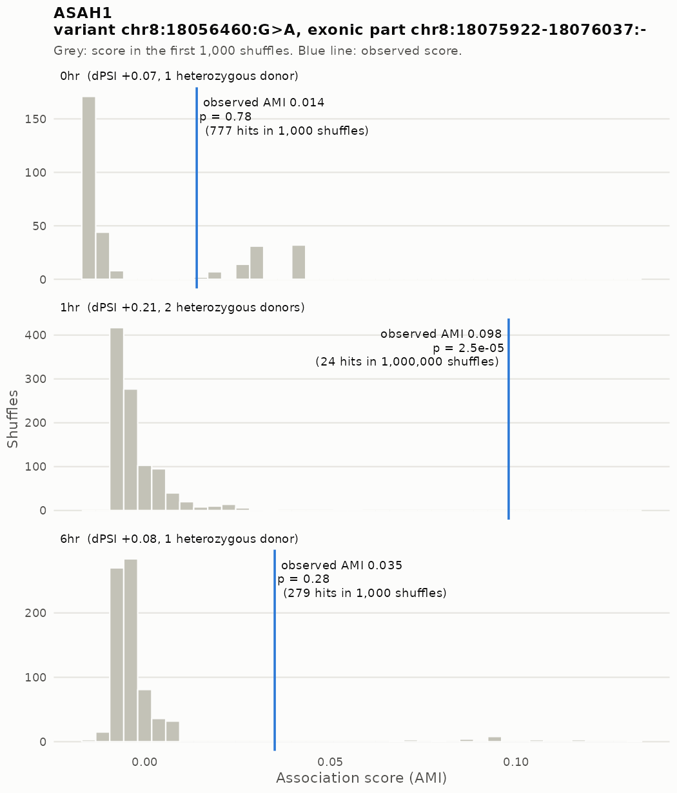
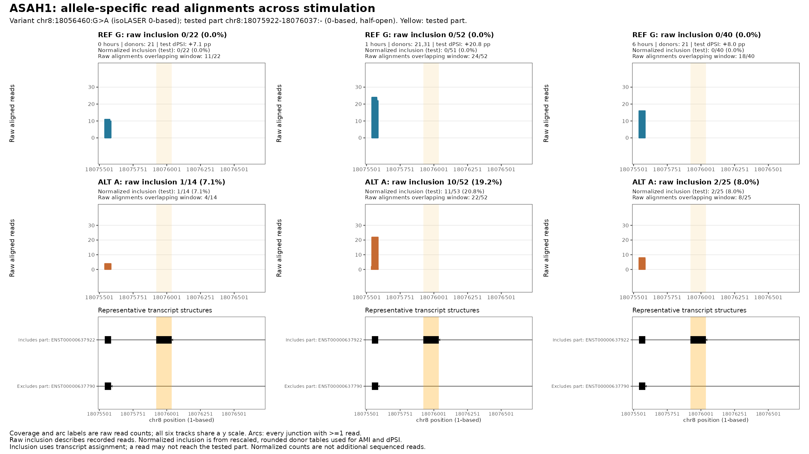
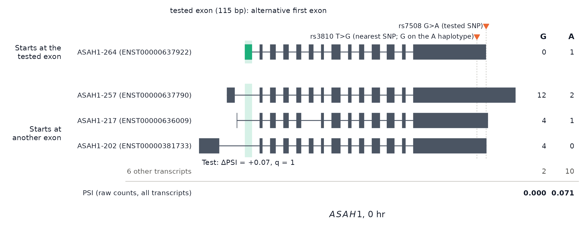

Transcript-based isoLASER: genome-wide FDR (q < 0.10)
XSun
2026-10-28
Last updated: 2026-10-28
Checks: 6 1
Knit directory: long_read_rna/
This reproducible R Markdown analysis was created with workflowr (version 1.7.0). The Checks tab describes the reproducibility checks that were applied when the results were created. The Past versions tab lists the development history.
The R Markdown is untracked by Git. To know which version of the R
Markdown file created these results, you’ll want to first commit it to
the Git repo. If you’re still working on the analysis, you can ignore
this warning. When you’re finished, you can run
wflow_publish to commit the R Markdown file and build the
HTML.
Great job! The global environment was empty. Objects defined in the global environment can affect the analysis in your R Markdown file in unknown ways. For reproduciblity it’s best to always run the code in an empty environment.
The command set.seed(20260908) was run prior to running
the code in the R Markdown file. Setting a seed ensures that any results
that rely on randomness, e.g. subsampling or permutations, are
reproducible.
Great job! Recording the operating system, R version, and package versions is critical for reproducibility.
Nice! There were no cached chunks for this analysis, so you can be confident that you successfully produced the results during this run.
Great job! Using relative paths to the files within your workflowr project makes it easier to run your code on other machines.
Great! You are using Git for version control. Tracking code development and connecting the code version to the results is critical for reproducibility.
The results in this page were generated with repository version 0491017. See the Past versions tab to see a history of the changes made to the R Markdown and HTML files.
Note that you need to be careful to ensure that all relevant files for
the analysis have been committed to Git prior to generating the results
(you can use wflow_publish or
wflow_git_commit). workflowr only checks the R Markdown
file, but you know if there are other scripts or data files that it
depends on. Below is the status of the Git repository when the results
were generated:
Untracked files:
Untracked: analysis/isolaser_fdr_panel10nc_q010_hetcis.Rmd
Untracked: analysis/isolaser_fdr_reads10nc_q010_hetcis.Rmd
Untracked: analysis/isolaser_gtex_comparison_panel10nc_q010_hetcis.Rmd
Untracked: analysis/isolaser_gtex_comparison_reads10nc_q010_hetcis.Rmd
Untracked: analysis/isolaser_gwas_catalog_q010.Rmd
Unstaged changes:
Modified: analysis/index.Rmd
Note that any generated files, e.g. HTML, png, CSS, etc., are not included in this status report because it is ok for generated content to have uncommitted changes.
There are no past versions. Publish this analysis with
wflow_publish() to start tracking its development.
This page reports transcript-based isoLASER without
the clustering filter at the cutoffs chosen on 2026-10-28: BH q
< 0.10 and |ΔPSI| ≥ 0.05, with isoLASER’s
cis label. The earlier page used q < 0.05 and
|ΔPSI| ≥ 0.10. Everything else is unchanged and described there: the
run, the donors and family rules, the permutation test and BH within
each timepoint. The q-values themselves are the same. BH was computed
over the full family of tested associations in each timepoint, before
the cis / ΔPSI screen, so the new cutoffs only report more
of them. The FDR target is now 10% within each timepoint’s full family.
The effect-filtered subset and the union across timepoints have no
separate guarantee.
Main result: 104 associations in 41 genes pass, against 85 in 29 genes at the earlier cutoffs. None are lost. The 12 new genes enter through the lower q cutoff alone (CNIH1, CUTA, LRPPRC, NDUFA2, PATJ, XPA); the lower |ΔPSI| cutoff alone (ANK2, ATP5MC3, MYT1L, RPL28, TACC2); both changes together (NME2).
Genome-wide results
| Timepoint | Tested associations | isoLASER cis, het donors | Screen (|ΔPSI| ≥ 0.05) | Reported: screen + q < 0.10 | Earlier cutoffs (q < 0.05, |ΔPSI| ≥ 0.10) |
|---|---|---|---|---|---|
| 0hr | 44,992 | 674 (203) | 440 (171) | 43 (18) | 37 (13) |
| 1hr | 68,841 | 1,139 (323) | 702 (260) | 75 (29) | 59 (21) |
| 6hr | 71,861 | 1,110 (323) | 666 (269) | 59 (25) | 51 (20) |
| any timepoint | 87,444 | 2,270 (613) | 1,586 (538) | 104 (41) | 85 (29) |
Cells other than Tested associations show associations (genes).
- isoLASER cis, het donors (our definition):
isoLASER’s own
ciscutoff, computed in this run from the panel-heterozygous donors, with no ΔPSI or q cutoff. It replaces the paper’s cutoff, isoLASER’s joint output, shown on the earlier version of this page. That set also used variants absent from the donors’ genotype panel, and pooled homozygous donors. - Screen (our definition), before FDR control:
isoLASER’s
cisrule on the panel-heterozygous donors, plus |ΔPSI| ≥ 0.05. - Reported: the screen plus q < 0.10.
- Earlier cutoffs: what the earlier page reported.
Any timepoint counts each gene or association once across timepoints.
How the test works
The test is the one described on the original page, with this run’s donor and family rules (earlier page).
| Timepoint | Stopped at 1,000 | Stopped at 10,000 | Stopped at 100,000 | Reached 1,000,000 |
|---|---|---|---|---|
| 0hr | 44,526 | 336 | 72 | 58 |
| 1hr | 68,043 | 582 | 117 | 99 |
| 6hr | 71,125 | 571 | 79 | 86 |
Stopped means at least 20 hits at that checkpoint, or no observed score (p = 1).

Real data only; there are no calibration runs for this run.
Genes to follow up
We apply the same two conditions as the earlier page (our definitions):
- Reported only after stimulation: at 1 or 6 hours, not at 0 hours.
- Neuron- or stimulation-related: a neuronal GO term, a disorder in SFARI or DDG2P, or a change in expression or splicing after stimulation in our data.
13 genes meet both, 6 of them new at these cutoffs.
| Gene | Reported at | 0 hr | 1 hr | 6 hr | Best q | New at these cutoffs | Relevance | Figures |
|---|---|---|---|---|---|---|---|---|
| ASAH1 | 1hr | +7 (36) | +21 (104) | +8 (65) | 0.0240 | ASAH1-related Farber lipogranulomatosis; ASAH1-related spinal muscular atrophy with progressive myoclonic epilepsy | below | |
| KPNA2 | 6hr | +8 (125) | +2 (284) | +12 (500) | 0.0150 | synapse; synaptic signaling (GO) | below | |
| LMBRD1 | 1hr, 6hr | +74 (35) | +85 (37) | +93 (76) | 0.0018 | LMBRD1-related methylmalonic aciduria and homocystinuria | below | |
| PARK7 | 1hr | -7 (595) | -17 (980) | -8 (969) | 0.0015 | neuron projection; neuron death (GO) | below | |
| ZNF749 | 6hr | -26 (88) | -17 (84) | -74 (127) | 0.0018 | splicing after stimulation | below | |
| ALDH3A2 | 1hr | no score | +46 (96) | no score | 0.0015 | ALDH3A2-related Sjogren-Larsson syndrome | ||
| ANK2 | 1hr | +0 (107) | +6 (159) | +0 (141) | 0.0028 | lower |ΔPSI| | neuron projection (GO); SFARI score 1; splicing after stimulation | |
| LRPPRC | 1hr | no score | +10 (78) | +0 (76) | 0.0520 | lower q | LRPPRC-related Leigh syndrome, French-Canadian type | |
| MYT1L | 1hr | -9 (106) | +8 (214) | +1 (265) | 0.0230 | lower |ΔPSI| | SFARI score 1; MYT1L-related intellectual developmental syndrome | |
| PATJ | 6hr | no score | no score | +59 (48) | 0.0500 | lower q | SFARI score 2 | |
| TACC2 | 6hr | -10 (47) | -5 (82) | +8 (107) | 0.0290 | lower |ΔPSI| | splicing after stimulation | |
| UBE2Q2P2 | 6hr | +68 (31) | +29 (40) | +43 (98) | 0.0120 | splicing after stimulation | ||
| XPA | 1hr | +30 (60) | +31 (124) | +31 (114) | 0.0710 | lower q | XPA-related xeroderma pigmentosum |
0 / 1 / 6 hr: allelic effect in percentage points, alternative minus reference inclusion, with pooled informative coverage in brackets, for the gene’s representative association. Best q: its lowest timepoint-specific q-value. New at these cutoffs: for genes not reported at the earlier cutoffs, which change brings them in. Figures: the genes with figures from the earlier page, shown below. The descriptions of these genes are on the earlier page. The other genes have no figures yet.
ASAH1
Permutation test

Read alignments (PDF)

Isoforms and haplotypes



All reported genes
Here, reported means q < 0.10, cis
and |ΔPSI| ≥ 0.05.
| Pattern | Genes |
|---|---|
| Reported at 3 timepoints | 12 |
| Reported at 2 timepoints | 7 |
| One timepoint; nominal support elsewhere | 8 |
| One timepoint; no nominal support elsewhere | 11 |
| One timepoint; no usable score elsewhere | 3 |
For genes reported at one timepoint, the last three categories describe the representative association at the other timepoints: nominal p < 0.05 there, p ≥ 0.05 where scored, or no usable score. They are not tests of an allele × time interaction. Among comparisons of reported associations with another timepoint, 85% had nominal p < 0.05 there and 98% had the same effect direction.
Full interactive gene table
All 41 reported genes. The variant, part, timepoint effects, best q and donor count refer to the representative association, the one with the lowest q. Reported at describes the gene across all its associations. At earlier cutoffs marks genes also reported at q < 0.05 and |ΔPSI| ≥ 0.10.
Data:
11.fdr_results/10.page_tables_q010.R writes this page’s
tables to docs/assets/fdr_panel10nc_q010_hetcis/, from
10.isolaser_permutation/out/adaptive_panel10nc/results/. It
is run with PAPER_SET=hetcis, which writes the cis counts
and copies the rest unchanged. The QQ plot, the adaptive rounds and the
figures are copied unchanged from the earlier page, because they don’t
depend on the cutoffs.
R version 4.2.0 (2022-04-22)
Platform: x86_64-pc-linux-gnu (64-bit)
Running under: Red Hat Enterprise Linux 8.4 (Ootpa)
Matrix products: default
BLAS/LAPACK: /software/openblas-0.3.13-el8-x86_64/lib/libopenblas_skylakexp-r0.3.13.so
locale:
[1] LC_CTYPE=C.UTF-8 LC_NUMERIC=C LC_TIME=C
[4] LC_COLLATE=C LC_MONETARY=C LC_MESSAGES=C
[7] LC_PAPER=C LC_NAME=C LC_ADDRESS=C
[10] LC_TELEPHONE=C LC_MEASUREMENT=C LC_IDENTIFICATION=C
attached base packages:
[1] stats graphics grDevices utils datasets methods base
other attached packages:
[1] DT_0.22 data.table_1.14.4 workflowr_1.7.0
loaded via a namespace (and not attached):
[1] Rcpp_1.0.11 compiler_4.2.0 pillar_1.9.0 bslib_0.3.1
[5] later_1.3.0 git2r_0.30.1 jquerylib_0.1.4 tools_4.2.0
[9] getPass_0.2-2 digest_0.6.29 jsonlite_1.8.7 evaluate_0.15
[13] lifecycle_1.0.4 tibble_3.2.1 pkgconfig_2.0.3 rlang_1.1.2
[17] cli_3.6.2 rstudioapi_0.14 crosstalk_1.2.0 yaml_2.3.5
[21] xfun_0.38 fastmap_1.1.0 httr_1.4.5 stringr_1.5.0
[25] knitr_1.42 htmlwidgets_1.6.2 sass_0.4.1 fs_1.5.2
[29] vctrs_0.6.1 rprojroot_2.0.3 glue_1.6.2 R6_2.5.1
[33] processx_3.5.3 fansi_1.0.3 rmarkdown_2.21 callr_3.7.0
[37] magrittr_2.0.3 whisker_0.4 ellipsis_0.3.2 ps_1.7.0
[41] promises_1.2.0.1 htmltools_0.5.7 httpuv_1.6.5 utf8_1.2.2
[45] stringi_1.7.6